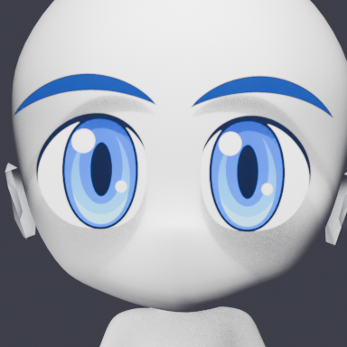
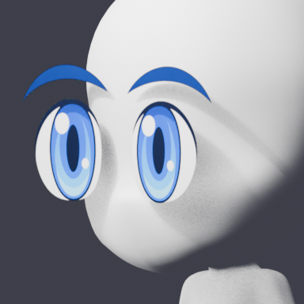
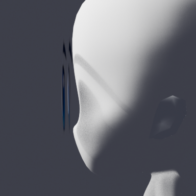
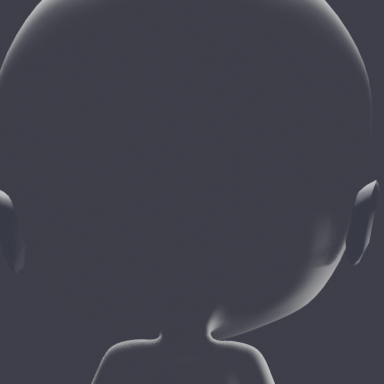

AssetsLab Movement Gallery
当前页面只保留移动动画基线。旧的眼睛/眨眼实验已全部移除，新的眼睛方案将在架构验证通过后重新建立。
Walk release baseline v78
移动基线用于确认四方向、完整步态周期和身体采样合同；它不是眼睛实验候选。
四方向 3D 渲染


四方向像素化预览


EyeAssemblyV1 static four-view test
Test candidate only: this is the first static 3D eye-assembly pass. It is not a blink animation and is not a final pixel asset.
Single 3D assembly projection



